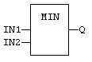
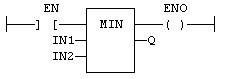

Function
Get the minimum of two values.
|
Name |
Type |
Description |
|
IN1 |
ANY |
First input. |
|
IN2 |
ANY |
Second input. |
|
Name |
Type |
Description |
|
Q |
ANY |
IN1 if IN1 < IN2; IN2 otherwise. |
In LD language, the input rung (EN) enables the operation, and the output rung keeps the state of the input rung. In IL language, the first input must be loaded before the function call. The second input is the operand of the function.
Q := MIN (IN1, IN2);

The comparison is executed only if EN is
TRUE.
ENO has the same value as EN.
